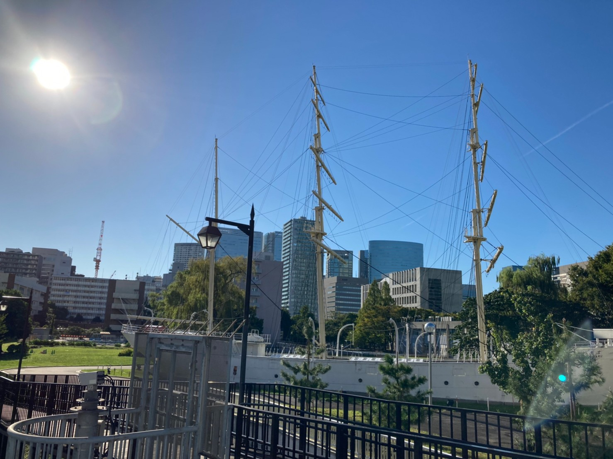
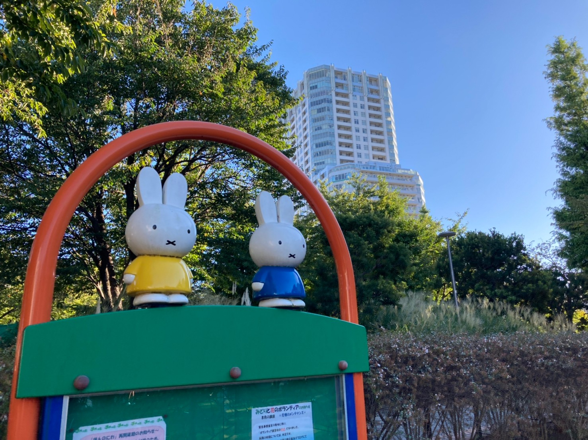
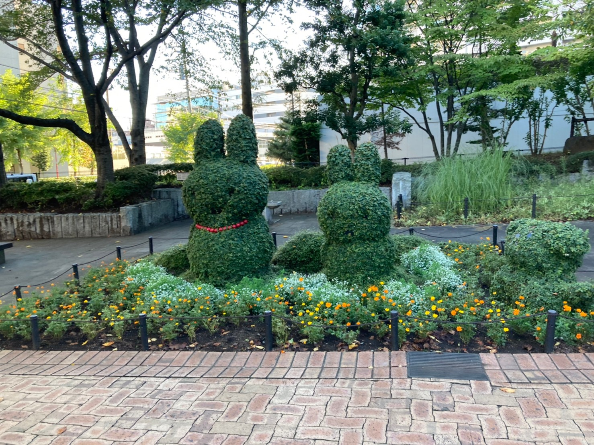

品川散歩
～天王洲アイル・品川シーサイド～
--/-- 2021
カテゴリー：通常散歩
 東京都品川区・港区
東京都品川区・港区
今回は品川駅から品川シーサイド駅に向かってお散歩してきました。
品川駅西口方面は水族館や京急線があり、用があるのは大抵西口方面ですが、今回は東口方面を散歩しました。東口方面はオフィスビルがメインの為、なかなか訪れることは少ない場所ですね。地元住民の方が多い印象を受けました。
雲鷹丸 
東京海洋大学 品川キャンパス内にある観光スポットの一つ『雲鷹丸』です。間近で見ると迫力があって見ごたえ抜群です。
「雲鷹丸」について詳細が知りたい方はこちらへ
こちらは『天王洲ふれあい橋』と呼ばれる歩行者専用橋です。品川駅方面から天王洲アイル方面へ徒歩で向かう際に利用するであろう橋です。夜景がとても綺麗だそうです。お洒落な雰囲気が漂う素敵な場所です。
アイル橋
こちらは『アイル橋』と呼ばれる橋です。このエリアからタワーマンションが立ち並ぶ高所得者が沢山いるであろう地域に進入していきます。
東品川海上公園 天王洲アイルにある気持がいい公園で有名な「東品川海上公園」です。こちらの公園内にはミッフィーがいるんです。
このあたりに住める大人になりたいと強く感じた品川散歩でした。
← 次の記事 前の記事 →